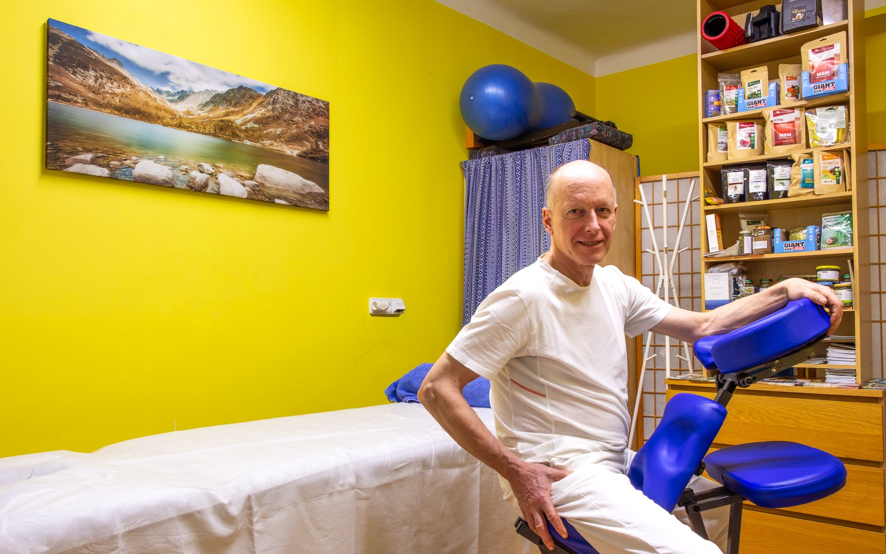

Než se k nám vypravíte, projděte si prosím seznam situací, kdy masáž není vhodná. Vaše bezpečí je pro mě prioritou.

Masáže jsou nevhodné bezprostředně po vydatném jídle, po nadměrné tělesné námaze, při celkovém větším vyčerpání, oslabení nebo při probíhajícím onemocnění.
Pokud si nejste jisti, zda s Vaším zdravotním stavem můžete absolvovat ošetření, můžete se zeptat svého lékaře.
U dolních končetin pozor v těchto případech:
Aby se nejlépe využilo všech regeneračních a osvěžujících benefitů masáže, je lepší po ní nekonzumovat kávu ani alkohol (dehydratace, zpomalení toku lymfy), omezit větší výdej energie a dbát na pitný režim a relax v klidu.
Nevhodné pro těhotné, kojící a děti do 3 let. Pro lidi s vysokým krevním tlakem nedávat na hlavu. Nikdy ne na sliznice, srdce, otevřené rány. Maximálně za den: 5 svící. Maximálně 3 svíce na jedno místo.
Ne při akutním infekčním onemocnění. Minimálně 2 hodiny před měřením nekouřit a nepít kofeinové a energetické nápoje. Měřený by neměl být psychicky či fyzicky vyčerpán. V den měření nemazat ruce a nohy žádnými krémy a vzít si jen nezbytně nutné léky, žádné doplňky stravy.
Jedná se o alternativní analýzu zdravotního stavu, zjištění konkrétních oslabení a testování nejefektivnějších přírodních přípravků na zjištěná oslabení. Současně se dělá poměrně široký rozbor osobnosti s velkým množstvím konkrétních údajů.
Nevhodné při: kardiostimulátor, gravidita, ekzémy, plísně, kožní poranění. U srdečních potíží nepřikládat do oblasti krajiny srdeční.